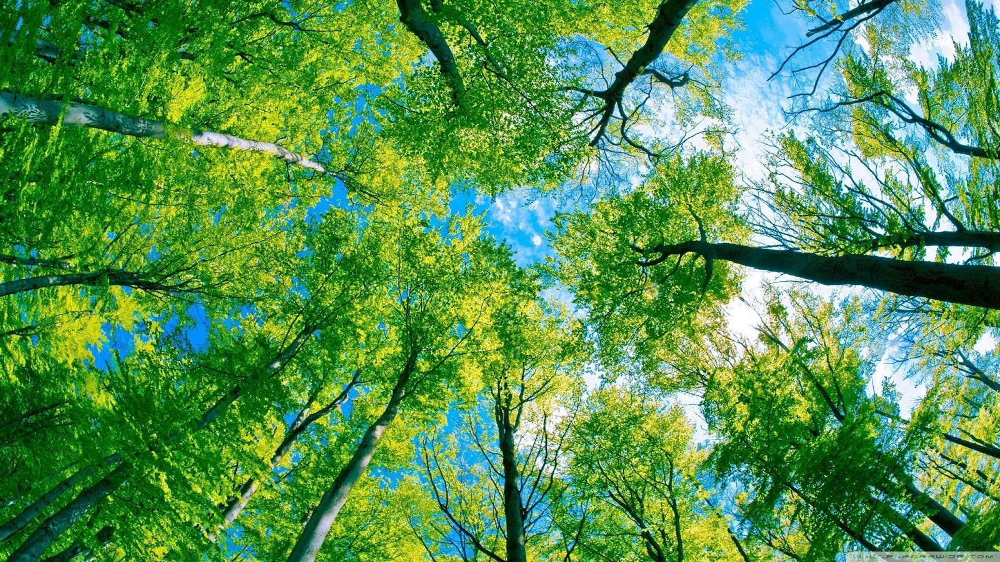

Definisi Lingkungan Hidup
Lingkungan hidup adalah kesatuan antara seluruh makhluk hidup dan non-hidup, meliputi berbagai unsur lingkungan serta manfaatnya, termasuk interaksi seluruh spesies dan SDA.
Pengertian Lingkungan Hidup Menurut para Ahli
Menurut Bintaro , Lingkungan hidup adalah segala hal yang berada di sekitar kita, baik itu benda ataupun makhluk hidup yang terpengaruh oleh kegiatan yang dilakukan manusia.Menurut Soemarwoto , lingkungan hidup adalah seluruh benda dan juga kondisi yang berada di dalam ruangan yang sedang kita tempati dan mempengaruhi kehidupan kita.
Menurut Emil Salim , Istilah lingkungan hidup yaitu mengacu kepada semua benda, keadaan, kondisi, dan juga pengaruh yang berada dalam ruangan yang sedang kita tinggali dan hal tersebut mempengaruhi kehidupan di sekitarnya baik itu hewan, tumbuhan, dan juga manusia.
Menurut Kamus Ekologi , istilah Lingkungan Hidup / environment mengacu kepada keseluruhan yang saling berkaitan antara makhluk hidup dan non-hidup yang berada secara alamiah di Bumi atau di sebagian daerahnya.
Menurut UU no 32 tahun 2009 , Lingkungan hidup adalah kesatuan ruang semua benda, daya, keadaan, makhluk hidup, termasuk manusia dan perilakunya, yang mempengaruhi alam itu sendiri, kelangsungan perikehidupan dan kesejahteraan menusia serta makhluk hidup lain.